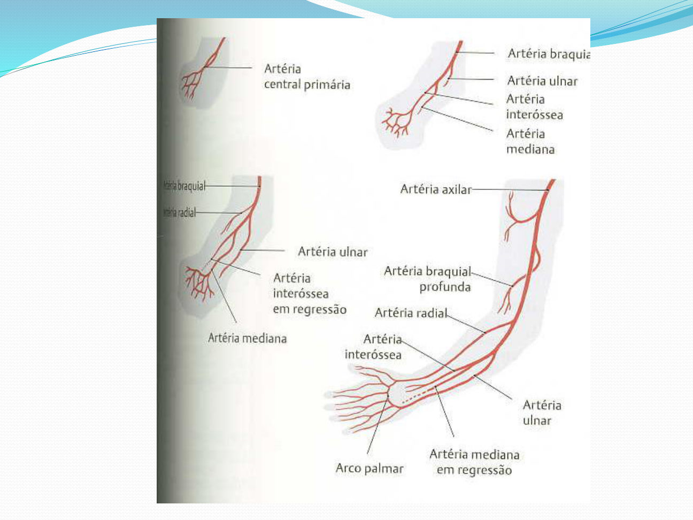
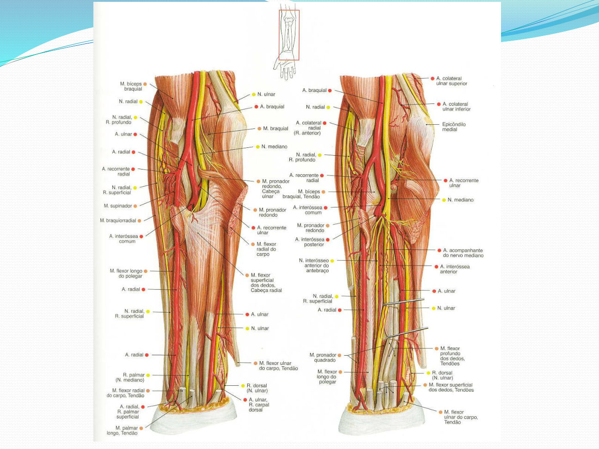
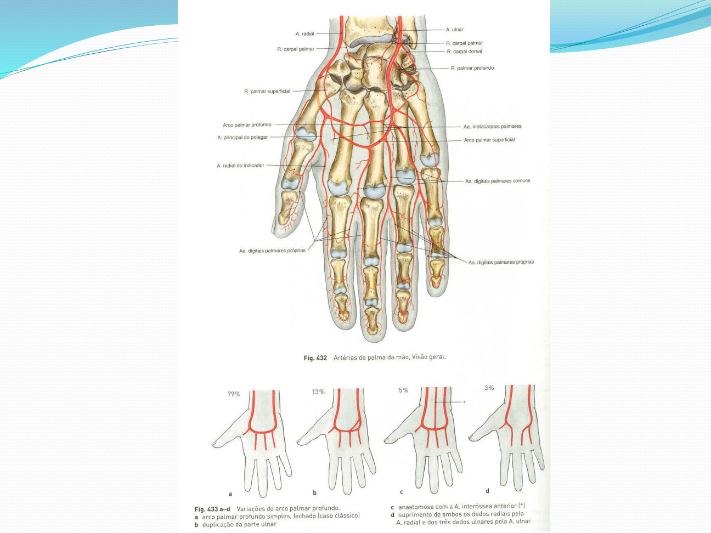
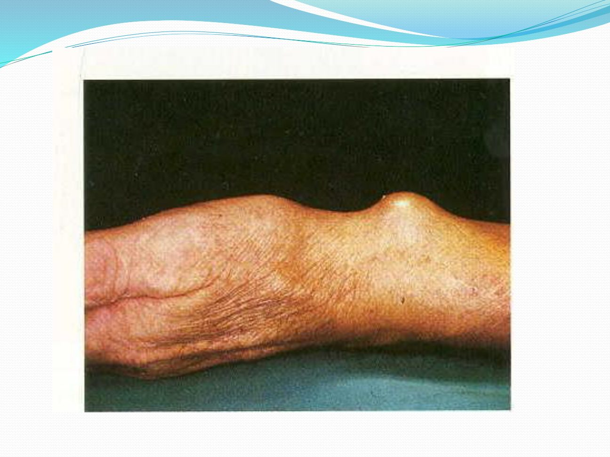
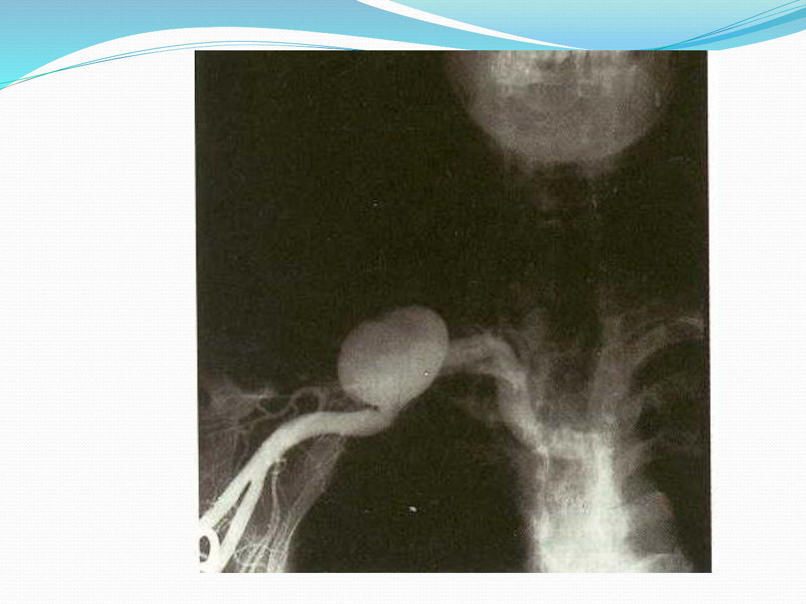
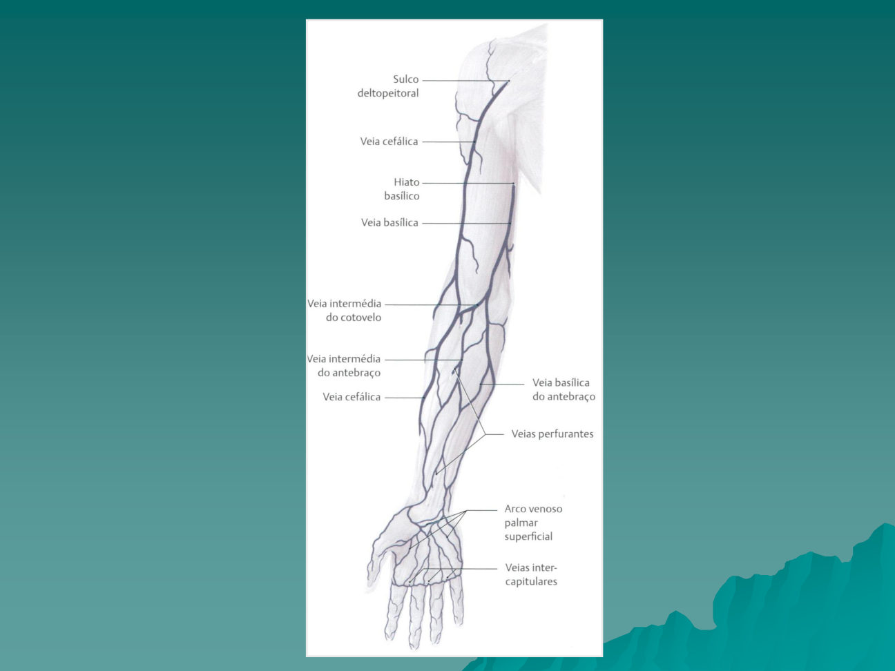
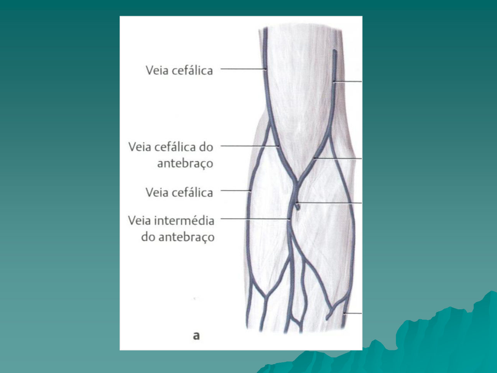
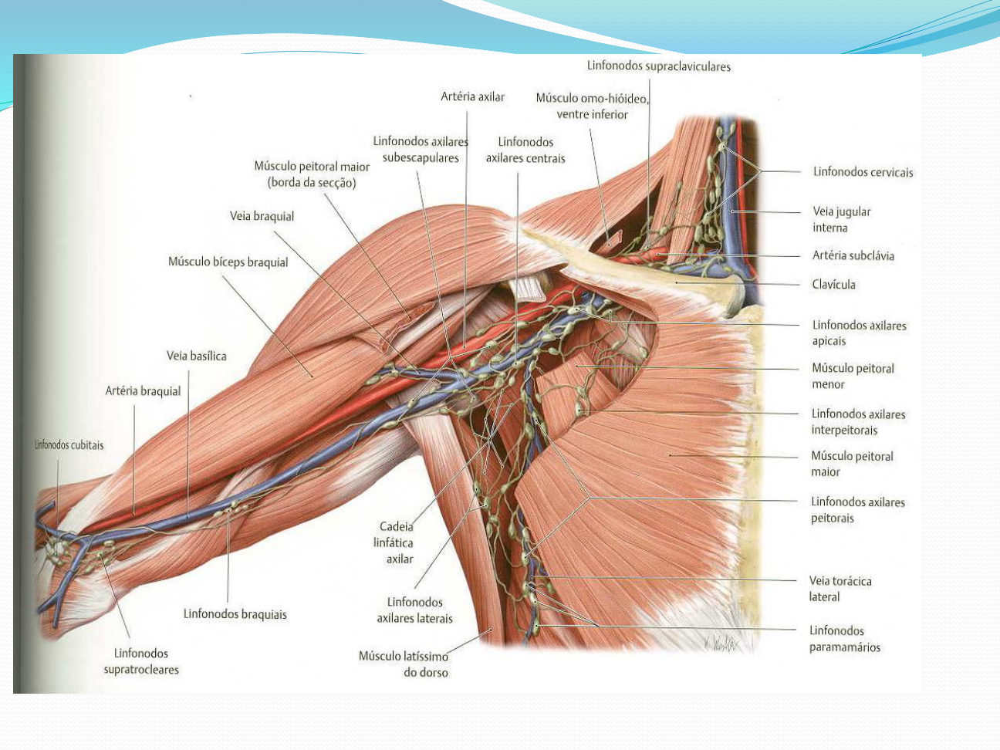

Córtex Estudos · 4º Semestre · Anatomia Topográfica · Aula 08
Topografia dos Membros Superiores
O eixo arterial da subclávia aos arcos palmares — com a circulação colateral do cotovelo e a lógica das artérias recorrentes —, a sintopia dos nervos do plexo braquial ao redor da artéria, a manobra de Allen e por que ela é obrigatória, o sistema venoso superficial (cefálica × basílica) e a flebotomia, a fossa cubital plano a plano — com a pegadinha do nervo ulnar — e a drenagem linfática do membro até o ducto torácico.
1 · O eixo arterial: subclávia → axilar → braquial
- A SUBCLÁVIA começa no tronco braquiocefálico (à direita) ou direto na aorta (à esquerda) — e acaba na PRIMEIRA COSTELA.
- Da primeira costela em diante ela vira ARTÉRIA AXILAR; a axilar acaba na margem do REDONDO MAIOR, onde começa a ARTÉRIA BRAQUIAL.
- A braquial corre medial ao úmero e depois passa anterior a ele, chegando à região da fossa cubital — onde vai se dividir.
⚠️ Divergência de referência: qual margem do redondo maior?
Na aula, a axilar termina na margem LATERAL do redondo maior. Nos livros (Moore, Netter), o limite clássico é a margem INFERIOR do redondo maior. O marco é o mesmo músculo — na prova do professor, use a versão da aula.

2 · Braquial × braquial profunda: condução × nutrição
- Logo no seu início, a braquial origina a ARTÉRIA BRAQUIAL PROFUNDA — o ramo mais importante da braquial, que sai posterolateral e desce junto do NERVO RADIAL pela face posterior do braço.
- 🎯 Divisão de trabalho: a braquial profunda NUTRE os tecidos do membro; a braquial CONDUZ o sangue para baixo.
🎯 A analogia do professor: igual à femoral
"Uma artéria de condução, que é a braquial, e uma artéria de nutrição para os tecidos — igual a femoral: a femoral desce e conduz o sangue para o membro inferior, e a femoral profunda nutre os tecidos." Guarde o par: tronco de condução + ramo profundo de nutrição, nos dois membros.
3 · Sintopia: os nervos ao redor da artéria
A artéria braquial e os ramos do plexo (de qual fascículo vem cada um)
- 1MEDIANO — CRUZA a artéria de LATERAL para MEDIAL — é a união dos fascículos LATERAL + MEDIAL; desce colado na braquial.
- 2MUSCULOCUTÂNEO — LATERAL à artéria — vem do fascículo LATERAL.
- 3ULNAR — MEDIAL à artéria — vem do fascículo MEDIAL.
- 4RADIAL — POSTERIOR à artéria braquial — e, um pouco mais alto, o AXILAR atrás da artéria axilar — ambos do fascículo POSTERIOR.
- A VEIA braquial é medial à artéria — e pode ser dupla: aí fica uma veia medial e uma lateral à artéria.
- Mais abaixo, o mediano cruza ANTERIOR à artéria ulnar e segue para o antebraço; a ulnar vai para a parte medial e passa a correr junto do nervo ulnar. A radial desce sob o braquiorradial, acompanhada do ramo superficial do nervo radial.
4 · A circulação colateral do cotovelo: colaterais e recorrentes
- Do lado LATERAL: a braquial profunda se divide em COLATERAL RADIAL e COLATERAL MÉDIA, que se anastomosam com a RECORRENTE RADIAL — ramo da radial.
- Do lado MEDIAL: a braquial dá as COLATERAIS ULNARES SUPERIOR e INFERIOR, que se anastomosam entre si e com a RECORRENTE ULNAR — ramo da ulnar.
- 🎯 Utilidade clínica: com uma obstrução da braquial (uma placa no meio do braço), o sangue vem por braquial profunda → colateral radial → recorrente radial → radial — e chega à mão. "As colaterais dão conta do recado."
- Atrás da fossa cubital existe uma grande rede de anastomoses unindo colaterais e recorrentes — é a circulação colateral do cotovelo.
🎯 Por que "recorrente"? Porque o fluxo RECORRE
O sentido normal do sangue arterial é coração → periferia. Numa artéria recorrente, o fluxo corre ao contrário — para CIMA — para encontrar a colateral que desce. Recorrente radial e colateral radial são artérias diferentes que normalmente se unem (embriologicamente podem nem se unir).

5 · Antebraço: radial, ulnar e as interósseas
- A braquial se divide na altura da CABEÇA (às vezes colo) do RÁDIO em RADIAL e ULNAR. A radial segue junto do rádio; a ulnar, junto da ulna, passando sob o pronador redondo e os flexores.
- A ULNAR origina a INTERÓSSEA COMUM — 🎯 curtinha (1–2 cm) — que logo se divide em interóssea ANTERIOR e POSTERIOR, correndo na frente e atrás da membrana interóssea (por isso o nome).
- 🎯 Detalhe de prova: a interóssea POSTERIOR perfura a membrana interóssea e desce por trás dela.
6 · Arco cárpico, arcos palmares e artérias digitais
- No carpo, radial + ulnar + interóssea formam o ARCO CÁRPICO.
- Na palma, radial e ulnar formam os DOIS ARCOS PALMARES:
| Arco palmar SUPERFICIAL | Arco palmar PROFUNDO | |
|---|---|---|
| Suprimento principal | artéria ULNAR | artéria RADIAL |
| Complemento | ramo palmar SUPERFICIAL da radial | ramo PROFUNDO da ulnar |
| Importância | 🎯 o mais importante — mais calibroso | menos calibroso |
- Dos arcos saem as artérias DIGITAIS COMUNS e depois as DIGITAIS PRÓPRIAS — uma lateral e uma medial a cada dedo.
🩺 Anestesia na base do dedo: aspire antes
Para suturar um dedo cortado, o bloqueio é na base do dedo — exatamente onde passam as digitais próprias, lateral e medial. Sempre aspirar antes de injetar, para não jogar anestésico dentro da artéria digital.

7 · Manobra de Allen: por que é obrigatória
- Como faz: comprime radial E ulnar no punho → o paciente abre e fecha a mão 10 vezes (esvazia a palma) → solta uma das artérias e observa a perfusão voltar. Depois testa a outra.
- O que ela responde: se o arco palmar é completo — se a ulnar sozinha consegue irrigar todos os dedos e a palma. 🎯 "Se todo mundo tivesse arcos completos, ninguém teria isquemia trombosando a radial. Mas nem todo mundo tem."
- Quando é obrigatória — todo procedimento que ocupa a radial: cateterismo cardíaco pela radial · PAI (pressão arterial invasiva na UTI/cirurgia — um cateter dentro da radial medindo a pressão) · fístula arteriovenosa para hemodiálise (normalmente radial → cefálica: roda o fluxo da artéria para dentro da veia).
🎯 O recado do professor
"Se vocês forem intensivistas, hemodinamicistas, anestesistas — não esqueçam da manobra de Allen. Quantas gangrenas de dedo e de mão inteira a gente já não pegou, teve que amputar dedo, amputar mão." Se a radial trombosar num arco incompleto, o polegar — ou a mão — entra em sofrimento.
8 · Aneurisma e pseudoaneurisma: a bolota pulsátil
- Na arteriografia da aula: uma dilatação da artéria AXILAR — um aneurisma verdadeiro.
- No punho, após um trauma, formou-se uma tumoração na topografia da radial: massa PULSÁTIL à palpação = PSEUDOANEURISMA da artéria radial — "não é um aneurisma verdadeiro, porque foi pós-traumático".
🩺 Palpe toda bolota antes de passar o bisturi
A armadilha: achar que é um abscesso e incisar para drenar — "aquilo explode num jato de sangue arterial". Se a bolota é pulsátil, é artéria. Palpação sempre, antes de qualquer drenagem.


9 · Sistema venoso: superficial × profundo (70/30)
- Superficial = acima da fáscia, no subcutâneo. Profundo = dentro dos compartimentos musculares/fasciais. Vale para membro superior e inferior.
- 🎯 No MEMBRO SUPERIOR: ~70% da drenagem venosa é SUPERFICIAL (20–30% profunda). No MEMBRO INFERIOR é o INVERSO: 70–80% profunda.
- É por isso que a cefálica costuma ser mais calibrosa que a braquial — e é por isso que, no membro inferior, dá para tirar as varizes (o sistema superficial de lá é dispensável).
⚠️ Campeão de variações
"O sistema venoso é o que mais apresenta variação anatômica no corpo humano" — de pessoa para pessoa e de braço para braço na MESMA pessoa. As quatro veias habituais do superficial: CEFÁLICA, BASÍLICA, INTERMÉDIA DO ANTEBRAÇO e INTERMÉDIA DO COTOVELO.

10 · Cefálica e basílica: os dois trajetos
| Veia CEFÁLICA | Veia BASÍLICA | |
|---|---|---|
| Origem | arco venoso DORSAL da mão, parte LATERAL (+ veias do polegar) | arco venoso DORSAL da mão, parte MEDIAL (+ veias do 5º dedo) |
| Trajeto | face lateral do antebraço → fossa cubital → lateral ao bíceps → SULCO DELTOPEITORAL | face medial do antebraço → recebe a intermédia do cotovelo → medial ao bíceps |
| Onde vira profunda | perfura a fáscia clavipeitoral no hiato e desemboca na AXILAR | 🎯 perfura a fáscia do bíceps no TERÇO MÉDIO do braço |
| Desfecho | cefálica + axilar = SUBCLÁVIA | basílica + braquial = AXILAR |
- 🎯 A sequência completa das uniões: braquial + basílica = AXILAR → axilar + cefálica = SUBCLÁVIA → subclávia + jugular interna = BRAQUIOCEFÁLICA → as duas braquiocefálicas formam a cava superior.
- O sulco deltopeitoral fica entre o deltoide e o peitoral maior — a cefálica sobe por ele antes de mergulhar no hiato.
11 · Intermédias, M venoso, variações — e as profundas duplas
- A INTERMÉDIA DO COTOVELO na maioria das vezes sai da cefálica em direção à basílica, cruzando a fossa cubital.
- A INTERMÉDIA DO ANTEBRAÇO sobe da palma pelo meio do antebraço e normalmente desemboca na intermédia do cotovelo — às vezes desenhando um "M" venoso na fossa.
- Mas há fossas sem intermédia do cotovelo (a do antebraço desemboca direto na basílica) e inúmeros outros arranjos — variação é a regra.
- Sistema profundo: as veias acompanham as artérias — 🎯 e no antebraço são DUPLAS: duas veias ulnares e duas radiais para cada artéria, que se unem formando a veia braquial. Às vezes há duas braquiais (uma medial e uma lateral à artéria); duas axilares ou duas subclávias é bem mais raro.

12 · Flebotomia: o acesso de quem não tem acesso
🩺 O cenário
Politraumatizado chega chocado ao pronto-socorro — choque hipovolêmico, precisa de infusão maciça de volume — e ninguém consegue um acesso calibroso no braço. A saída: dissecar a veia e abri-la. Flebo = veia, tomia = corte: FLEBOTOMIA.
- 🎯 A referência anatômica: EPICÔNDILO MEDIAL → 2 cm PARA CIMA + 2 cm LATERAL → corte transverso → ali está a BASÍLICA, que se disseca rapidamente.
- Alternativas: a CEFÁLICA (do lado lateral) — ou, no membro inferior, a SAFENA MAGNA anterior ao MALÉOLO MEDIAL, onde ela é bem superficial.
- Técnica: abre a parede anterior da veia com bisturi e insere um cateter de grosso calibre para infundir volume, sangue ou medicamentos.
13 · Fossa cubital: limites e os dois planos
- 🎯 "O mais importante do membro superior é lembrar da fossa cubital" — a região de transição entre braço e antebraço, em forma de V.
Os limites do V — e o que há em cada plano
- 1SUPERIOR — linha imaginária transversa entre os EPICÔNDILOS medial e lateral.
- 2LATERAL — músculo BRAQUIORRADIAL.
- 3MEDIAL — músculo PRONADOR REDONDO.
- 4ASSOALHO — o músculo BRAQUIAL, que está por baixo de tudo.
| Plano SUPERFICIAL (acima da fáscia) | Plano PROFUNDO (tirando a fáscia e a aponeurose do bíceps) |
|---|---|
| Veia CEFÁLICA (lateral) + ramos do n. CUTÂNEO LATERAL do antebraço Veia BASÍLICA (medial) + ramos do n. CUTÂNEO MEDIAL do antebraço Intermédia do cotovelo e intermédia do antebraço | TENDÃO DO BÍCEPS ARTÉRIA BRAQUIAL + veia braquial ao lado NERVO MEDIANO (medial à artéria) NERVO RADIAL (escondido sob o braquiorradial) NERVO MUSCULOCUTÂNEO (entre o bíceps e o braquial) |
14 · O ulnar fora da fossa — e o caso da coleta
⚠️ "Toda prova põe" — o nervo ULNAR NÃO passa na fossa cubital
O ulnar está FORA da fossa: ele passa ATRÁS do EPICÔNDILO MEDIAL. "Toda prova, sempre, na meia dúzia de alternativas, põe lá o nervo ulnar dentro da fossa cubital — ele passa fora, junto do epicôndilo medial." Não caia.
🩺 A coleta de sangue que complica
A técnica vai puncionar a intermédia do cotovelo, inclina um pouco mais a agulha e punciona profundo: pega a ARTÉRIA BRAQUIAL — já aconteceu: hematoma enorme e pulsátil que precisou ser aberto e suturado — ou dá choque na mão: pegou o NERVO MEDIANO, e a mão fica dormente. Numa simples coleta, as complicações moram logo abaixo da fáscia.
15 · Drenagem linfática: os grupos axilares e os territórios
- Grupo AXILAR — as 5 cadeias da aula: INFRACLAVICULAR · PEITORAL (anterior) · SUBESCAPULAR (posterior) · CENTRAL · APICAL. Grupo NÃO axilar: linfonodos isolados do braço/antebraço + o SUPRATROCLEAR (pode ou não existir, acima da tróclea).
- 🎯 Territórios: toda a linfa ACIMA da CICATRIZ UMBILICAL (na frente) e ACIMA da CRISTA ILÍACA (atrás, incluindo a nuca) drena para o grupamento axilar. Abaixo dessas linhas → linfonodos INGUINAIS.
- Quem drena o quê: MEMBRO SUPERIOR → INFRACLAVICULAR (7–12 linfonodos, abaixo da clavícula, junto da veia axilar) — 🎯 exceto os linfáticos que acompanham a veia CEFÁLICA, que vão DIRETO ao APICAL · parede abdominal e torácica (acima da cicatriz) → PEITORAL (4–5 linfonodos na margem do peitoral) · dorso, escápula e nuca → SUBESCAPULAR (9–12, junto do latíssimo do dorso).
- O funil final: tudo converge → CENTRAL (3–4 linfonodos na gordura da axila) → APICAL (~7 linfonodos, supraclaviculares, junto da subclávia) — o coletor final. Exemplo do tumor de mama: peitoral → central → apical — "a metástase se espalha pelos linfonodos".
⚠️ Divergência de nomenclatura com os livros
Nos livros (Moore), os grupos axilares são anterior (peitoral), posterior (subescapular), LATERAL (umeral), central e apical — é o grupo UMERAL que recebe quase toda a linfa do membro superior, e o "infraclavicular" (deltopeitoral) fica fora da axila, na via da cefálica. Na aula, o INFRACLAVICULAR entra como cadeia axilar e é a porta de entrada do membro superior, com a via da cefálica indo direto ao apical. Na prova, vale a aula.
🩺 Raciocínio de território: onde está o abscesso?
Coleção de pus na parede abdominal (acima da cicatriz): a linfa leva as bactérias ao grupo PEITORAL. Abscesso no couro cabeludo/nuca: vai ao SUBESCAPULAR. É o mesmo mapa que a metástase usa.

16 · Ducto torácico × ducto subclávio direito
- Do grupo apical de cada lado forma-se um DUCTO SUBCLÁVIO (nomenclatura da aula).
- 🎯 Lado DIREITO: o ducto subclávio desemboca DIRETO na veia — normalmente no ângulo entre subclávia e jugular interna direitas.
- 🎯 Lado ESQUERDO: o ducto subclávio desemboca no DUCTO TORÁCICO — e é o ducto torácico que desemboca nas veias.
- O trajeto do ducto torácico: nasce da CISTERNA DO QUILO (o grande reservatório de linfa do abdome — recebe intestino, membros inferiores, parede) → sobe no tórax ATRÁS DO ESÔFAGO, ao lado da AORTA → no pescoço faz a curva para a ESQUERDA → recebe o ducto subclávio esquerdo → desemboca no ÂNGULO JÚGULO-SUBCLÁVIO ESQUERDO (entre jugular interna e subclávia esquerdas).
- Proporções e números da aula: o ducto torácico drena ¾ do corpo; o ducto subclávio direito, ¼. Passam por ele no mínimo 3 litros de linfa por dia. Quem ladeia o ducto no tórax: as veias ÁZIGO e HEMIÁZIGO.
🩺 Quilotórax — e a erisipela bolhosa
Lesão do ducto torácico dentro do tórax → linfa caindo na cavidade pleural → QUILOTÓRAX, o derrame pleural de linfa ("quilo" pelo produto de degradação do intestino, da cisterna do quilo). E no braço inchado, vermelho e cheio de bolhas: ERISIPELA BOLHOSA — infecção grave em que as bactérias ascendem pelos vasos linfáticos, desenhando o trajeto linfático.
⚠️ Nomenclatura nos livros
O que a aula chama de "ducto subclávio" aparece nos livros como TRONCO SUBCLÁVIO — que à direita se une aos troncos jugular e broncomediastinal formando o DUCTO LINFÁTICO DIREITO. A lógica é idêntica (direito → direto na veia; esquerdo → ducto torácico); só muda o nome. Na prova do professor, "ducto subclávio".
17 · Resumo rápido
- Eixo arterial: subclávia (acaba na 1ª costela) → axilar (acaba no redondo maior) → braquial → divide na cabeça do rádio em radial e ulnar; a ulnar dá a interóssea comum (1–2 cm) → anterior + posterior (a posterior perfura a membrana).
- Braquial CONDUZ, braquial profunda NUTRE — e desce com o nervo radial.
- Cotovelo: colaterais (de cima) + recorrentes (fluxo para cima) = circulação colateral que salva a mão na obstrução da braquial.
- Arcos palmares: superficial = ulnar + ramo superficial da radial (o mais calibroso/importante); profundo = radial + ramo profundo da ulnar. Variações são a regra → manobra de ALLEN antes de cateterismo, PAI e fístula AV.
- Sintopia: mediano CRUZA lateral→medial; musculocutâneo lateral; ulnar medial; radial (e axilar) posteriores — fascículo posterior.
- Veias: MS drena 70% pelo superficial (MI é o inverso); cefálica = lateral → sulco deltopeitoral → axilar; basílica = medial, perfura a fáscia no terço médio → + braquial = axilar; axilar + cefálica = subclávia. Profundas do antebraço são duplas.
- Flebotomia: epicôndilo medial + 2 cm acima + 2 cm lateral = basílica (ou cefálica; ou safena magna anterior ao maléolo medial).
- Fossa cubital: V entre os epicôndilos, braquiorradial (lateral) e pronador redondo (medial), assoalho = braquial; profundo = tendão do bíceps + a. braquial + mediano (+ radial sob o braquiorradial, musculocutâneo entre bíceps e braquial). ULNAR NÃO PASSA NELA — atrás do epicôndilo medial.
- Linfa: acima da cicatriz umbilical/crista ilíaca → axilares (MS → infraclavicular, exceto via da cefálica → apical; parede → peitoral; dorso/nuca → subescapular; tudo → central → apical) → ductos subclávios: direito direto na veia, esquerdo no ducto torácico (cisterna do quilo → atrás do esôfago → curva à esquerda → ângulo júgulo-subclávio esquerdo; ¾ × ¼; ≥3 L/dia; quilotórax se lesar).
🗺️ Resumão Pré-Prova — Membros Superiores
Revisão da véspera · Anatomia Topográfica · Aula 08 · só o que foi enfatizado
- Subclávia acaba na 1ª COSTELA → axilar acaba no REDONDO MAIOR → braquial divide na CABEÇA DO RÁDIO em radial e ulnar.
- Braquial CONDUZ · braquial profunda NUTRE (sai posterolateral, desce com o nervo RADIAL) — "igual femoral/femoral profunda".
- ULNAR origina a INTERÓSSEA COMUM (1–2 cm) → anterior + posterior (a POSTERIOR perfura a membrana).
- Cotovelo: colaterais radial/média (da braquial profunda) ↔ recorrente radial; colaterais ulnares sup/inf ↔ recorrente ulnar. Recorrente = fluxo RECORRE (sobe). Obstruiu a braquial → colateral → recorrente → sangue chega à mão.
- Massa pulsátil pós-trauma = PSEUDOANEURISMA — palpe TODA bolota antes de drenar "abscesso".
- Carpo: radial + ulnar + interóssea = arco CÁRPICO. Palma: SUPERFICIAL = ULNAR + ramo superficial da radial (MAIS CALIBROSO/importante) · PROFUNDO = RADIAL + ramo profundo da ulnar.
- Digitais comuns → digitais PRÓPRIAS (lateral e medial a cada dedo) → na anestesia da base do dedo, ASPIRAR antes de injetar.
- ALLEN SEMPRE antes de: cateterismo pela radial · PAI · fístula AV (radial-cefálica) — comprime as duas, abre-fecha a mão 10×, solta uma. Arcos incompletos existem → trombose da radial = gangrena de polegar/mão.
| Nervo | Posição | Fascículo |
|---|---|---|
| MEDIANO | CRUZA lateral → medial | lateral + medial |
| MUSCULOCUTÂNEO | lateral | lateral |
| ULNAR | medial | medial |
| RADIAL (e AXILAR) | posterior | posterior |
- Depois: mediano cruza anterior à a. ulnar; radial desce sob o braquiorradial com o ramo superficial do n. radial; veia braquial medial à artéria (pode ser dupla).
- MS: 70% superficial · MI: inverso (70–80% profundo) — por isso varizes do MI podem sair.
- CEFÁLICA: arco dorsal LATERAL → lateral → sulco DELTOPEITORAL → hiato → AXILAR. BASÍLICA: arco dorsal MEDIAL → medial → perfura a fáscia do bíceps no TERÇO MÉDIO → + braquial = AXILAR.
- Braquial+basílica=AXILAR · axilar+cefálica=SUBCLÁVIA · +jugular interna=BRAQUIOCEFÁLICA → cava superior.
- Intermédia do cotovelo (da cefálica → basílica) + intermédia do antebraço (desemboca nela; "M" venoso). Variação é a regra — pessoa a pessoa e braço a braço. Profundas do antebraço DUPLAS.
- FLEBOTOMIA: epicôndilo medial + 2 cm ACIMA + 2 cm LATERAL → BASÍLICA (ou cefálica; ou safena magna ANTERIOR ao maléolo medial) — politrauma chocado sem acesso.
- V: linha entre os EPICÔNDILOS (sup.) · BRAQUIORRADIAL (lat.) · PRONADOR REDONDO (med.) · assoalho = m. BRAQUIAL.
- Superficial: cefálica + n. cutâneo LATERAL do antebraço · basílica + n. cutâneo MEDIAL · intermédias.
- Profundo: tendão do BÍCEPS · a. BRAQUIAL + veia · n. MEDIANO (medial à artéria) · n. RADIAL sob o braquiorradial · musculocutâneo entre bíceps e braquial.
- ULNAR NÃO PASSA NA FOSSA — atrás do EPICÔNDILO MEDIAL ("toda prova põe").
- Coleta funda na intermédia do cotovelo → pega a. braquial (hematoma pulsátil) ou mediano (choque/dormência).
- Axilares (aula): INFRACLAVICULAR · PEITORAL(ant.) · SUBESCAPULAR(post.) · CENTRAL · APICAL + não axilares (isolados, supratroclear).
- Territórios: acima da CICATRIZ UMBILICAL (frente) / CRISTA ILÍACA (atrás, com a nuca) → AXILARES; abaixo → inguinais.
- MS → INFRACLAVICULAR (7–12, junto da v. axilar), EXCETO via da CEFÁLICA → APICAL direto · parede abd./torácica → PEITORAL · dorso/nuca → SUBESCAPULAR · tudo → CENTRAL → APICAL (coletor final). Mama: peitoral→central→apical.
- Ducto subclávio DIREITO → direto na veia · ESQUERDO → DUCTO TORÁCICO (cisterna do quilo → atrás do ESÔFAGO, ao lado da AORTA, ladeado pelas ÁZIGOS → curva à ESQUERDA → ângulo JÚGULO-SUBCLÁVIO esquerdo).
- Números: ¾ × ¼ do corpo · ≥3 L de linfa/dia. Lesão torácica do ducto = QUILOTÓRAX. Braço vermelho + bolhas = erisipela BOLHOSA (bactérias sobem pelo trajeto linfático).
| Par | A diferença-chave |
|---|---|
| Braquial × braquial profunda | condução × NUTRIÇÃO (e a profunda desce com o n. radial) |
| Colateral × recorrente | desce da braquial/braquial profunda × SOBE da radial/ulnar (fluxo recorre) — unem-se no cotovelo |
| Arco superficial × profundo | ULNAR manda (mais calibroso) × RADIAL manda |
| Aneurisma × pseudoaneurisma | dilatação verdadeira × pós-TRAUMA (massa pulsátil no punho) — ambos pulsam, nunca incisar |
| Cefálica × basílica | LATERAL → sulco deltopeitoral → axilar × MEDIAL → perfura fáscia no terço médio → +braquial=axilar |
| Fossa cubital: quem NÃO passa | o nervo ULNAR — fica atrás do epicôndilo medial ("toda prova põe") |
| MS × MI (drenagem venosa) | 70% superficial × 70–80% profunda (por isso MI pode perder as varizes) |
| Ducto subclávio direito × esquerdo | desemboca DIRETO na veia × desemboca no DUCTO TORÁCICO |
| Infraclavicular × apical | porta de entrada do MS (7–12, sob a clavícula) × coletor FINAL supraclavicular (via da cefálica chega direto) |
Banco de Questões — Membros Superiores
Anatomia Topográfica · Aula 08 · estilo ENADE/residência.